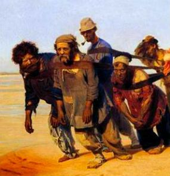

Я аналитически-ориентированный психолог
Помогаю людям измениться, выйти из кризиса и сделать жизнь лучше. Для этого я изучил классическую психологию в Российском Университете Дружбы Народов. Затем научился консультировать клиентов, используя психоанализ, психосинтез, юнгианскую и экзистенциальную психологию. Благодаря такому разнообразию навыков я найду правильный подход к проблеме. И приведу вас к ее решению
С чем могу помочь
Эмоциональные проблемы
Проблемы в отношениях с близкими

Отсутствие сил и энергии
Отсутствие целей в жизни
Кризисы
Соматические расстройства
Эмоциональные проблемы
Перепады настроения, всплески неожиданных эмоций, неконтролируемое поведение - весьма неприятные вещи. Не стоит просто сидеть и терпеть. От них можно и нужно избавиться. Самое главное - найти причины и научиться контролировать себя
Проблемы в отношениях с близкими
Если вы чувствуете, что отношения с близким человеком болезненны и не приносят радости - их нужно исправлять. Разобраться в ситуации, научиться налаживать новые мосты, найти свое место в отношениях. Из скандалов есть выход!
Отсутствие сил и энергии
Современный мир пытается сделать нас сверх эффективными. Нужно выполнять тысячи задач, спать по два часа в день и… уставать. От этого не избавиться, так устроен человек. Найти новые источники сил, убрать все ненужное, поставить четкие жизненные цели, научиться радоваться и отдыхать - все это поможет избавиться от “болезни XXI века”
Отсутствие целей в жизни
Иногда мы начинаем ощущать себя не в своей тарелке. Работа не радует, отношения с окружающими портятся, хобби перестают спасать от тоски. И все чаще встают вопросы: “А чего я хочу от жизни? Как найти себя?”. Не нужно унывать! На консультациях мы сможем найти путь к вашей самости, найти цели и сделать жизнь полной и радостной
Кризисы
Бывает, что на своем жизненном пути мы упираемся в стену. И кажется, что жизнь рушится. Мы начинаем бесцельно бродить, ища способы выбраться из такой ситуации. Но все больше заходим в тупик. На самом деле, выход есть. На консультации мы рассмотрим ваши приоритеты и используем для выхода из сложившейся ситуации
Соматические расстройства
Некоторые психические “симптомы” могут проявлять себя через тело. Сыпь, зуд, кашель… Если врачи говорят вам, что вы абсолютно здоровы и советуют сходит к психологу - стоит прислушаться. Это нормальное психическое явление. Приходите на консультацию, мы все исправим. Только помните - к врачу нужно идти обязательно.